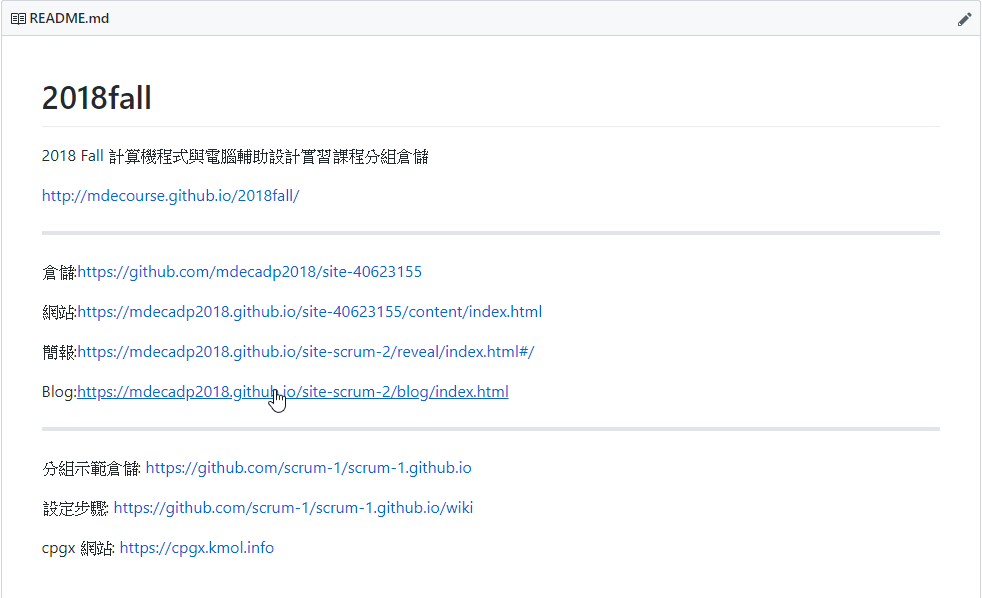
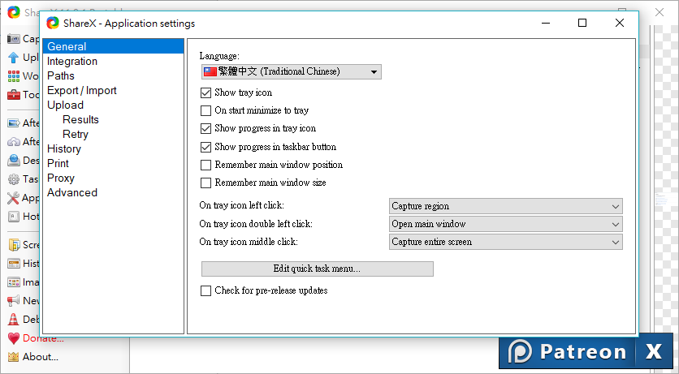
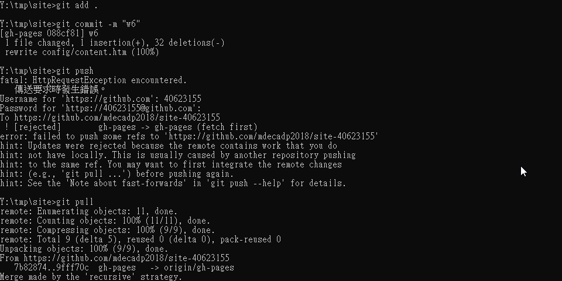

*本日更新：
處理先前所需處理的網頁連結部分
修改"readme"內容

2.熟悉shareX跟網頁處理部分
A.ShareX部分發現從Application setting部分更改語言部份無法更換為繁體中文，不知道是否因為課堂需熟捻英文環境下已將此語言包移除

B.網頁近端部分，本周上課時發現利用"Python wsgi.py開始近端時發生近端無法開啟的事件(開啟網址使用:https:/localhost:8443/)，爾後換電腦也無法解決，(此部分指令都有照上課方法打，卻發生無法開啟，後續解決辦法為:重複按F5重新整理卻又正常可以進入近端了)
C.在編輯完近端後準備推遠端時，使用"git push"時發現無法push上去，本以為是帳號密碼輸入錯誤，但後續請教老師後發現程式上提示"fetch first"的字樣，代表我有版本上的錯誤，需先執行"git pull"指令抓取合併後方才能push上去。

-------------------------------------------------------------------------------------------------------------
教師本週教學影片：
個人本週作業影片：